|
|
|
LabVIEW и реальное время
Климентьев К.Е., 2004
|
|
Статья постоянно обновляется и дополняется.
Последнее изменение внесено 13.03.06
|
Для начала несколько определений:
Реальное время - режим работы автоматизированной системы, характеризующийся ограничениями на динамические (временные) характеристики процесса функционирования.
Наиболее важные динамические (временные) характеристики:
1) моменты наступления внутрисистемных событий (например, моменты выполнения требуемых действий при работе "по расписанию");
2) длительности нахождения системы в определенных состояниях (например, продолжительности выполнения фрагментов программы);
3) время отклика системы на внешние события (например, время реакции на прерывание).
Основное назначение систем, работающих в режиме реального времени, - взаимодействие с объектами реального мира в темпе процессов, протекающих в этих объектах. Точку зрения фирмы National Instruments на то, что такое реальное время, где оно применяется и почему оно важно, см. в Приложении А.
Операционные системы класса MS Windows (за исключением, быть может, Windows CE) не являются специализированными ОСРВ (RTOS), поэтому создание полноценных систем реального времени на их основе затруднено, а часто просто невозможно. Все недостатки MS Windows в полной мере отражаются на системах, реализованных в среде LabVIEW, и кроме того, LabVIEW накладывает и свои ограничения на возможность создания систем реального времени. Существенным недостатком LabVIEW является принципиальная невозможность обработки внешних прерываний. Это означает, что единственная возможность привязки ко времени в LabVIEW - это циклический опрос (polling) состояния какого-нибудь внешнего устройства, обладающего известными динамическими (временными) характеристиками, например: часов реального времени, системного таймера, счетчика процессорных тактов, подсистемы синхронизации последовательных портов, таймеров звуковой платы и т.п.
1. Базовые возможности работы со временем
В LabVIEW имеются несколько стандартных узлов, предназначенных для организации работы приложений в режиме реального времени (см. рис. 1).
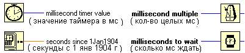
Рис. 1. Стандартные виртуальные приборы для работы со временем
"Будильник" возвращает количество миллисекунд, накопленных с момента старта Windows. "Наручные часики" всегда делают задержку на целое количество миллисекунд. "Метроном" тоже задерживает текущий процесс, но, в отличие от “часиков”, начинает отсчет не с начала миллисекунды, а с текущего момента времени, и заканчивает его тогда, когда системные часы превысят указанный интервал, в результате чего первая миллисекунда обычно отсчитывается не полностью, а последняя оказывается "лишней".
2. Системный таймер
Богатые возможности по организации приложений реального времени предоставляет встроенный программируемый системный таймер ПЭВМ. Краткое описание принципов его работы и методов программирования см. в учебном пособии "Основы графического программирования в среде LabVIEW". Там же были разработаны и описаны простейшие виртуальные приборы для манипулирования 2-ым каналом этого таймера (см. рис. 2).
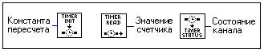
Рис 2. Виртуальные приборы для работы со 2-м каналом таймера
Примечание 1. Возможен также доступ к 0-му каналу таймера. Но этот канал обычно используется Windows для организации многозадачности и поэтому не может быть произвольно перепрограммирован. Возможно только считывание накопленного с момента старта Windows количества тактовых импульсов таймера, поступающих с частотой 1.19 МГц. Это осуществляется посредством обращения к стандартной функции API32 QueryPerformanceCounter(), реализованной в WINMM.DLL. Если быть более точным, то в современных чипсетах могут присутствовать и дополнительные, более высокочастотные таймеры, а операционные системы класса Windows NT/2000 (но не Windows 95/98/ME могут использовать для организации многозадачности и реализации функции QueryPerformanceCounter() именно их. Текущую разрешающую способность QueryPerformanceCounter() можно определить при помощи функции QueryPerformanceFrequency(). Технику обращения к QueryPerformanceCounter()средствами LabVIEW см. в Приложении Б. Кстати, эти "высокочастотные" альтернативные таймеры (например, используемый в Windows XP APIC-таймер) на практике могут оказаться гораздо менее точными, чем "стандартный" системный таймер.
Следующий виртуальный прибор (см. рис. 3), использующий узлы "Timer Init", "Timer Read" и "Timer Status", может служить иллюстрацией методов программирования таймера.
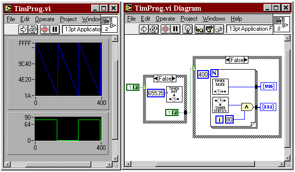
Рис 3. Пример программирования системного таймера
На рис 3. хорошо виден декремент значения таймерного счетчика и "опрокидывание" сигнала OUT (ему соответствует старший бит в байте состояния канала).
Системный таймер может быть использован для организации временных задержек с длительностью 1 мс и менее. Идея этого использования заключается в следующем. В регистр справочной константы загружается значение коэффициента пересчета, соответствующее требуемой задержке. Известно, что каждые D T »0.84 мкс. из счетчика вычитается число 2. Следовательно, для того, чтобы значение счетчика обнулилось за время T мкс, необходимо предварительно загрузить коэффициент пересчета K=(T/DT)*2. Далее необходимо в цикле сканировать значение счетчика до тех пор, пока не произойдет его перезагрузка. Виртуальный прибор "Timer Delay", использующий эту идею, изображен на рис. 4.
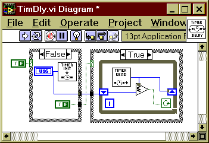
Рис. 4. Задержка на малые интервалы времени
Теоретически, минимальная величина задержки составляет 0.84 мкс., максимальная 27 мс (а если несколько усложнить метод и учитывать значение сигнала OUT, то 55 мс). В результате многочисленных экспериментов на различных, даже самых быстрых машинах, выяснилось, что реальная разрешающая способность - примерно 3-5 мкс.
Продемонстрируем также возможность точного измерения малых интервалов времени (например, длительности выполнения узла "millisecond multiple").
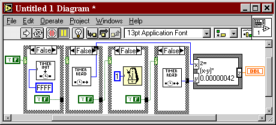
Рис. 5. Измерение времени срабатывания “Метронома”
Теоретически, разрешающая способность метода составляет 0.84 мкс. Реально - те же самые 3-5 мкс.
3. Реальное время в условиях многозадачности
На любые программы, работающие в среде Windows, огромное влияние оказывает режим разделения времени между различными процессами, конкурирующими за системные ресурсы. Известны два способа разделения процессорного времени между процессами:
- кооперативный (cooperative);
- вытесняющий (preemptive).
При "кооперативном" способе организации многозадачности процессы сами передают управление друг другу в те моменты времени, в которые сочтут нужным (возможно, что только после своего завершения). При "вытесняющем" способе каждому процессу выделяется определенный временной интервал ("квант времени", timeslice), по истечении которого работа процесса принудительно прерывается и управление передается какому-то другому (а возможно, и тому же самому) процессу (см. рис. 6). Порядок передачи управления процессам зависит от "приоритета" процесса, - целого числа, определяющего его привилегии в системе. В Windows 3X реализована "кооперативная" многозадачность, а в Windows 9X/ME/NT/2000/XP - "вытесняющая".
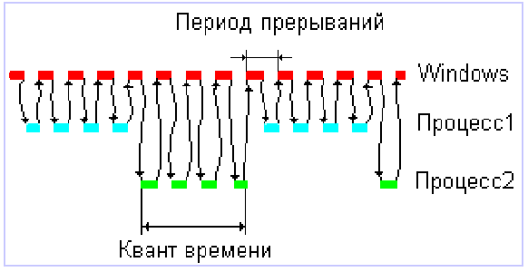
Рис. 6. Передача управления между процессами
при "вытесняющей" многозадачности, основанной на прерываниях от таймера
Примечание 2. В разных версиях Windows продолжительность кванта времени и периода таймерных прерываний различны, более того, они могут изменяться в течение сеанса работы. Типичное значение кванта времени – от 20 (Windows NT/2K WorkStation) до 120 (Windows NT/2K Server) миллисекунд. Период таймерных прерываний (по умолчанию в Windows 9X он (якобы) 5 мс, а в Windows NT – 10 мс, в LabVIEW принудительно 1 мс) может быть изменен программно при помощи API32-функций timeBeginPeriod() и timeEndPeriod(), реализованных в WINMM.DLL. Кстати, от этого параметра очень сильно зависит точность срабатывания API32-функции Sleep(), на работе которой основаны стандартные средства организации временных задержек в LabVIEW (см. рис. 1).
Продемонстрируем влияние "вытесняющей" многозадачности на работу приложений LabVIEW. Модифицируем виртуальный прибор, изображенный на рис. 5 таким образом, чтобы он многократно измерял "пустое место" (т.е. накладные расходы на организацию цикла измерений).
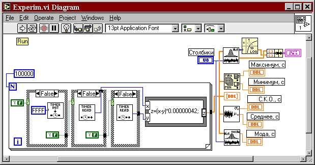
Рис. 7. Измеритель "пустого места"
Эксперименты производились на разных компьютерах в разных версиях Windows. На рис. 8 приведены типичные результаты измерений (на гистограмме масштаб - логарифмический).
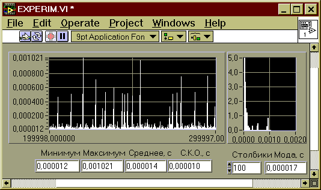
Рис. 8. Времена выполнения цикла для P-II Celeron 360МГц Windows 98
Очевидно, работа в таких условиях противоречит требованиям, возлагаемым на системы (жесткого) реального времени. По крайней мере, любые методы измерения временных интервалов и генерации временных задержек, основанные на циклическом опросе состояния внешних процессов и устройств, будут приводить к заметным погрешностям.
4. Методы улучшения динамических характеристик приложений LabVIEW
Время выполнения "пустого" цикла может рассматриваться как случайная величина, причем качественный характер ее поведения одинаков на разных компьютерах и в разных версиях операционных систем. Обобщенная плотность распределения этой случайной величины имеет вид, изображенный на рис. 9.
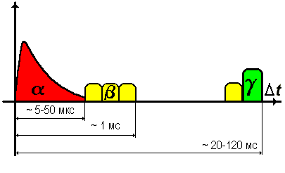
Рис. 9. Обобщенное распределение времени выполнения цикла
Анализ результатов измерений позволяет предположить, что случайная величина, характеризующая длительность выполнения цикла, есть комбинация трех составляющих:
T = a + b + g.
Случайная величина a распределена по усеченному (на интервале от 0 до нескольких десятков микросекунд, в зависимости от быстродействия компьютера) экспоненциальному закону и соответствует времени, которое тратится на выполнение цикла системой “процессор-память”. Сюда включается время выполнения команд (с учетом конвейеризации) и нерегулярные задержки, связанные с переключением банков памяти; с кэшированием команд и данных; с регенерацией динамической памяти и т.п. Минимизировать это время можно, выбрав более быстродействующий компьютер.
Случайная величина b в общем случае многомодальна и распределена на интервале от нескольких десятков микросекунд до 1 мс (в редких случаях - до десятков мс). Свой вклад в эти задержки вносят обработчики прерываний от многочисленных внешних устройств: от HDD и FDD, от видеоадаптера, от сетевой карты, от таймера и т.п. Сюда же входят задержки, получившиеся в результате переключения на задачи, которые в итоге "отказываются" полностью использовать свой квант времени. Минимизировать это время можно, удалив из компьютера такие устройства, как сетевые карты; не обращаясь к таким устройствам ручного ввода-вывода, как мышь и клавиатура; отключив в BIOS Setup опции энергосбережения и т.п. Но полностью избавиться от этих задержек, видимо, невозможно.
Примечание 3. К этому же классу задержек можно отнести задержки, связанные с обращениями к диску во время переключения страниц памяти. Эти задержки проявляются при работе с большими массивами данных, расположенными в вытесняемой памяти, и имеют порядок - несколько десятков миллисекунд.
Случайная величина g распределена сравнительно узким пиком, который располагается на временной оси в районе от нескольких десятков до нескольких сотен миллисекунд (в зависимости от версии Windows и от количества конкурирующих процессов). Ей соответствуют ситуации, когда квант времени текущего процесса заканчивается, и управление получает какой-то другой процесс (процессы), которые также используют свой квант до конца. Минимизировать это время можно, удалив из памяти все “посторонние” процессы и повысив приоритет текущего процесса (см. рис. 10). Анализ влияния параметра “priority” на динамические характеристики виртуальных приборов см. в Приложении Б.
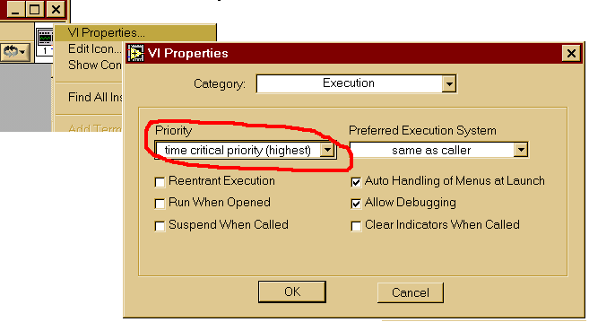
Рис. 10. Изменение относительного приоритета виртуального прибора LabVIEW
Примечание 4. Если быть точным, то большинство фоновых процессов не дорабатывают свой квант до конца, например, напрасно ожидая пользовательского ввода. Эти задержки лежат в области b, и именно их я назвал их выше "прерываниями от таймера".
Примечание 5. В терминологии фирмы Microsoft "процесс" - это объект, потребляющий статические ресурсы (оперативную и дисковую память), а процессорное время потребляется объектами под названием “потоки” (“нити”, “threads”), которых внутри одного “процесса” может быть несколько. Итоговый приоритет “потока” складывается из базового приоритета, назначаемого “процессу”, и собственного относительного приоритета. Параметр “priority”, рассмотренный выше, влияет только на относительный приоритет “потока”, реализующего виртуальный прибор. Можно попробовать изменить до максимального также базовый приоритет "процесса" LABVIEW.EXE, как показано на рис. 11.
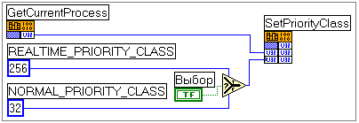
Рис. 11. Изменение базового приоритета
Эксперименты показывают, что совместное увеличение базового приоритета "процесса" и относительного приоритета "потока" позволяет виртуальному прибору полностью захватывать процессор, но по завершении работы виртуального прибора возможна неустойчивая работа Windows. Еще один интересный эффект увеличения приоритета заключается в том, что регулярные временные задержки от аппаратных прерываний (случайная составляющая "b") исчезают из области <1 мс и собираются вместе в области "g", заметно сдвигая ее в сторону увеличения длительности задержек. На трассе временных интервалов это выглядит так: в течение многих сотен тысяч и миллионов циклов задержки стабильно малы, а потом следует одиночный, но очень большой (десятые доли секунды!) выброс. Вероятно, оба эффекта (неустойчивость работы и изменение качественной картины распределения задержек) связаны с двухступенчатым алгоритмом обслуживания аппартных прерываний в Windows: при приходе сигнала прерывания операционная система на короткий срок получает управление и добавляет запрос на обработку в очередь необработанных прерываний. Собственно обработка выполняется позднее, при просмотре очереди "рабочим" потоком. Если "заморозить" этот поток своим экстремально-приоритетным потоком, то: 1) операционная система периодически пытается "разгрести" накопившиеся прерывания, не взирая на наличие высокоприоритетных потоков; 2) после освобождения процессора высокоприоритетными потоками операционная система занимается некоторое время исключительно обработкой прерываний, хотя, возможно, устройства требовали быстрой реакции на свои запросы, а запоздалая попытка обработать их приводит только к дезорганизации системы. Короче говоря, приоритет time critical для Windows чужероден и должен применяться осторожно, на коротких временных отрезках.
Примечание 6. Еще одним решением проблемы могло бы служить использование операционных систем с кооперативной многозадачностью (кстати, может быть, это и не требуется, т.к. Windows 95/98/ME для поддержки 16-разрядных приложений, например - LabView 3.X или LabVIEW 4.X for Windows 3.X, автоматически переключается в "кооперативный" режим). Эксперименты, проведенные на конфигурации, включающей P-IV 2000 МГц, Windows 3.11 for Workgroups и LabVIEW v3.1, продемонстрировали возможность выполнения циклов с отклонениями от номинальной продолжительности не более, чем на 1 мс.
Резюме. Итак, на современных программно-аппаратных конфигурациях неизбежно возникновение нерегулярных временных задержек длительностью до нескольких десятков миллисекунд. В общем случае средствами LabVIEW возможно удовлетворительное решение задач (жесткого) реального времени лишь при реализации циклов сбора данных и управления с частотами следования итераций не выше 10-20 Гц.
Примечание последнее. Конечно, столь пессимистичный вывод - следствие того, что в этой статье мы сами загнали себя в угол, попытавшись решить нерешаемую задачу: заставить многозадачную систему Windows работать в режиме однозадачности. Если же слегка снизить требования к реактивности поллинга, например до 1 мс, то задача вполне решаема. Надо просто не тратить полностью свой квант и давать "дышать" другим потокам, активно используя API32-функцию Sleep() (т.е. узлы "Метроном" или "Часики"). Если им передать в качестве параметра 1, то и получим жесткую привязку к миллисекундному циклу; если 0, то виртуальный прибор просто передаст управление другим потокам, т.е. реактивность, вероятно, будет выше, чем 1 мс, но какая точно - неизвестно, возможно даже, что в каждом цикле разная. Вот и все, а вы боялись. J
Что еще почитать:
(с) Constantin E. Climentieff aka DrMad,
mailto: drmad@dr.com * http://drmad.chat.ru
|